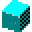

Produtos
Veja aqui alguns produtos disponibilizados pela Pysi:
|
 Bloquinhos Descrição: Jogo de velocidade e estratégia, onde você precisa clicar na cor exibida no menor tempo possível. Mas cuidado com a velocidade, que sempre aumenta. Valor: Grátis Download |
Sorteio.Net Descrição: Aplicativo que sorteia cartelas de loteria. Ele salva um sorteio diário, de 100 cartelas, escolhendo quinze números diferentes por tabela. Valor: Grátis Download |
|
Gerador de Senha Descrição: Crie senhas seguras em segundos. Esse aplicativo permite a criação de uma quantidade determinada de senhas aleatórias, contendo letras e números nos valores definidos. Valor: Grátis Download |
Para executar esses programas, é necessário ter instalado o .Net Framework 2.0. Se você não possui, clique aqui para baixar.